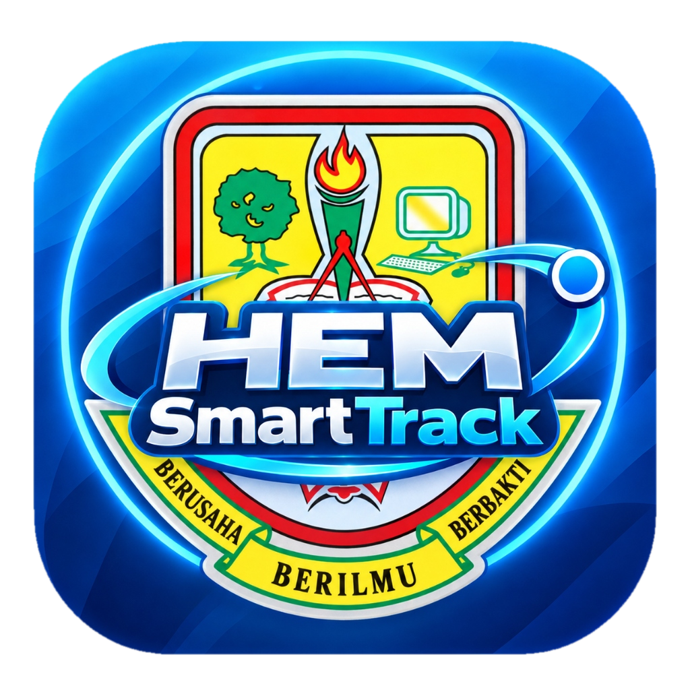

Amalan Terbaik 2026
SK Ranggu, Tawau
HEM SmartTrack
| Pendigitalan Bersepadu
⚡
Montaj
(1080p)
🖨️
PDF
⛶
✕
🎬
MONTAJ VIDEO PEMBUKAAN
1080P HD
Audio Sinematik Stereo • Tangkap Layar Sebenar • Widescreen
H.264 • Stereo Audio
↺ Main Semula
Ke Slaid 1 ➔
Inovator:
Mohammad Fikrey bin Abdul Gapar
Tutup ✕